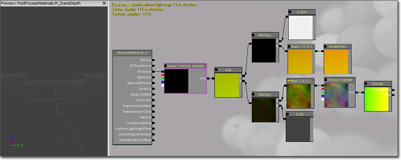

Post Process Material Effects
Overview
One of the most powerful aspects of the post processing system in Unreal Engine 3 is the ability to use the Material System and all of its flexibility and extensibility to sample, modify, and manipulate the rendered scene through the use of Material Effect nodes within the Post Process Chain. This document covers some of the basic principles and techniques commonly used when creating materials to be used as Material Effects within a Post Process Chain.
MaterialEffect
The MaterialEffect node is used to insert a Material into the post processing chain. It references a Material whose Emissive output is passed on to the next node in the chain as the rendered scene.
Material
The Material referenced in a MaterialEffect will usually sample the current rendered scene and then modify it in some way, passing the result on through its Emissive channel. Materials used in post processes must use the MLM_Unlit Lighting Model and in order to sample the scene texture or scene depth the material must use a transparent Blend Mode (Translucent, Additive, Modulate, AlphaComposite).
Depth Group
The Scene DPG property refers to which buffer will be sampled by the material effect. Most material effects will use the SDPG_PostProcess group, but any effect that uses the SceneDepth expression will probably use the SDPG_World group.
Adding A Material Effect
Right-clicking on the workspace in the Post Process Editor will allow you to add a MaterialEffect node. Creating a connection from the output of the Scene node or any other existing node into the input of the MaterialEffect node will add that MaterialEffect to the chain.
Selecting the MaterialEffect node will display its properties. To assign a Material to the Material property of the MaterialEffect node, first select the Material in the Content Browser. Then, press the  button of the Material property to assign the selected Material.
In order to see the effects of the new MaterialEffect on the post process chain and the scene, the PostProcessChain the MaterialEffect is being added to must be set as the default post process. This is done in the DefaultEngine.ini using the DefaultPostProcessName property.
button of the Material property to assign the selected Material.
In order to see the effects of the new MaterialEffect on the post process chain and the scene, the PostProcessChain the MaterialEffect is being added to must be set as the default post process. This is done in the DefaultEngine.ini using the DefaultPostProcessName property.
[Engine.Engine]
DefaultPostProcessName=EngineMaterials.DefaultScenePostProcess
[UnrealEd.UnrealEdEngine]
DefaultPostProcessName=EngineMaterials.DefaultScenePostProcess
To preview the effects in the editor, the Show In Editor property of the MaterialEffect node needs to be checked, and the flag for PostProcessEffects must be enabled in the perspective viewport.
SceneTexture Expression
Instead of using a TextureSample as the primary render source for the material, the SceneTexture expression is used when creating a Material for use in the post processing system. This expression is used in exactly the same manner as any TextureSample except that it outputs the currently rendered scene instead of a regular texture. This is visualized in the image below with an added depth-based desaturation to show the output of the SceneTexture expression is being modified by the material.
The most basic usage is to connect the RGB output to the emissive input for the shader. If this example is used in the PostProcess system, there will be no visual result, as it is merely rendering the scene and not doing any additional work to the results. The SceneTexture has a UVs input, which again is identical to the one on a TextureSample. Changes in tiling and UV offsets can be done using this UVs input.
Note: The SceneTexture does not render the scene correctly in the material editor, you must have it in use in the PostProcess system to see it in use.
SceneDepth Expression
The SceneDepth expression in the Material Editor can be used to sample the scene depth texture. Essentially, this expression outputs the depth from the camera to the geometry in the world at the current pixel. The image below shows the output of the SceneDepth expression where the distance range of [0,5120] is mapped to the value range [0,1] (or black to white).
In most cases, using the SceneDepth expression requires additional math to be performed to scale and bias the depth results to the value range desired. For example, dividing the SceneDepth by a value (SceneDepth / 1024) will provide a normalized distance value that increases from 0 to 1 as the depth goes from 0 to 1024. Clamping this to a range of [0,1] will allow it to be used for many effects, such as the example shown above where depth is mapped to grayscale values.
Material Examples
These are a few methods of using the MaterialEffect channel to modify the final rendered scene.
Scene Tinting
This example demonstrates recoloring the scene color to create a sepia tone effect.
(Click for full size)
First, a SceneTexture expression is added and passed through a Desaturation expression to desaturate the scene color.
A ComponentMask is added to separate out the R channel of the scene color and it is then multiplied by a Constant of 8.
This value is multiplied by a Constant3Vector with a value of (0.4875, 0.2588, 0.0784) which represents the sepia 'stain'.
The result is then recombined with the desaturated version of the scene using an Add expression to reintroduce the other (non-red) elements of the scene.
The end result of this is connected to the Emissive input channel.
Distortion
This example demonstrates modifying the UV texture coordinates of the SceneTexture to create a heat or water distortion effect.
(Click for full size)

The basic principle at play here is that a panning TextureSample's R and G channels are added to the ScreenPosition UV texture coordinates to distort them. First, a TextureCoordinate expression with U and V tiling of 2.0 and 2.0 is added. The output of the TextureCoordinate is connected to the Coordinate input of a Panner with X and Y speeds of 0.0 and 0.375. The output of the Panner is connected to the UVs input of a TextureSample whose Texture is a rainbow cloud image (shown below). The RGB output of the TextureSample is passed through a ComponentMask to separate out the R and G channels. The output of the ComponentMask is multiplied by a Constant of 0.05 to lessen the amount of distortion.
A ScreenPosition expression with Screen Align set to True is passed through a ComponentMask to separate out the R and G channels to use as the main UV texture coordinates. The output of the ComponentMask is multiplied by a Constant of 0.975 to stretch the scene passed the boundaries of the viewport slightly. This is necessary to keep the edges of the scene from being noticeable when the distortion is applied.
The outputs of the two Multiply expression at the end of each network above are then combined using an Add expression. The resulting value is connected to the UVs input of a SceneTexture expression. Finally, the RGB output of the SceneTexture is connected to the Emissive input channel of the material.
Depth Mask
This example demonstrates using the SceneDepth as a mask to interpolate between the normal SceneTexture output and the distortion effect created above.
(Click for full size)
For setup of the distortion network referenced here, see the Distortion section above.
A SceneDepth expression is added and its output is divided by a Constant of 5120 to normalize the values to a usable range. The output of the Divide expression is passed through a ConstantClamp expression with min and max values of 0.125 and 1.0. The clamped value is connected to the Alpha input of a LinearInterpolate expression.
The output of the Multiply node from the ScreenPosition portion of the distortion network is connected to the A input of the LinearInterpolate expression. This represents the unmodified UV texture coordinates to use when viewing objects close the camera.
The output of the Add expression from the distortion network is connected to the B input of the LinearInterpolate expression. This represents the modified, or distorted, UV texture coordinates to use when viewing distant objects.
The output of the LinearInterpolate expression is connected to the UVs input of the SceneTexture expression whose RGB output is then connected to the Emissive input channel of the material.
Important!
You are viewing documentation for the Unreal Development Kit (UDK).
If you are looking for the Unreal Engine 4 documentation, please visit the Unreal Engine 4 Documentation site.